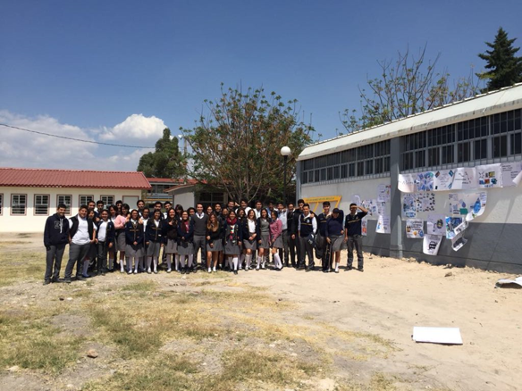

Acciones de la comunidad Del CBTiS para mejorar la calidad del plantel y comunidades cercanasRegresar Se compartió los resultados de sensibilizar en los parques cercanos a su domicilio sobre la responsabilidad de recoger las heces de su mascota, difundir sobre la importancia de usar un proecto sustentable, ayudar donando arboles al plantel. |
|  |